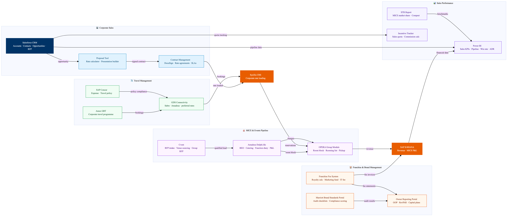

This diagram maps Marriott's sales, MICE, and franchise management technology ecosystem. Salesforce CRM is the central sales platform managing corporate accounts, RFP responses, pipeline tracking, and TMC relationships. Amadeus Delphi.fdc handles the MICE pipeline from initial enquiry through BEO creation, event execution, and post-event billing. Cvent integrates for large group RFPs and attendee management. For franchise properties, the Marriott Brand Standards portal manages compliance audits, fee reporting, and brand engagement. All sales performance and franchise KPIs consolidate in Power BI for above-property reporting to ownership and asset management teams.